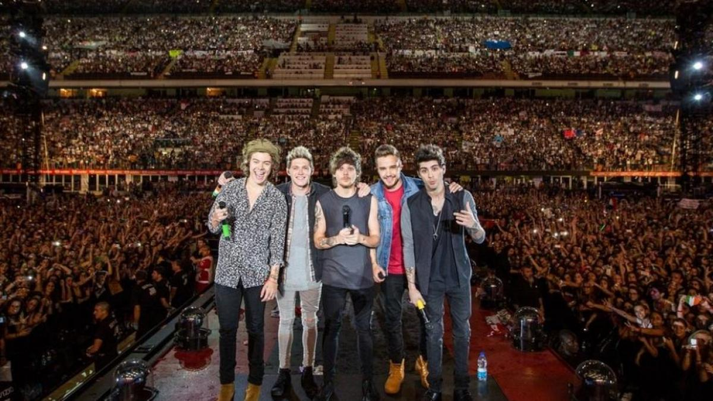
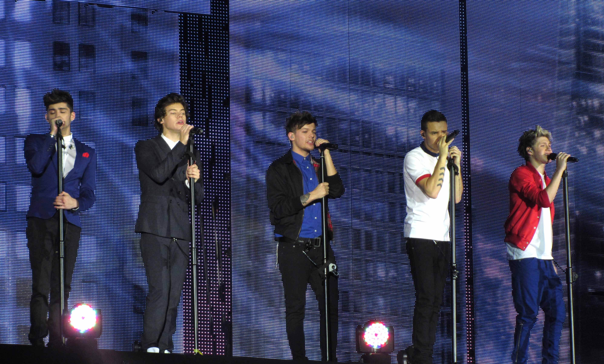
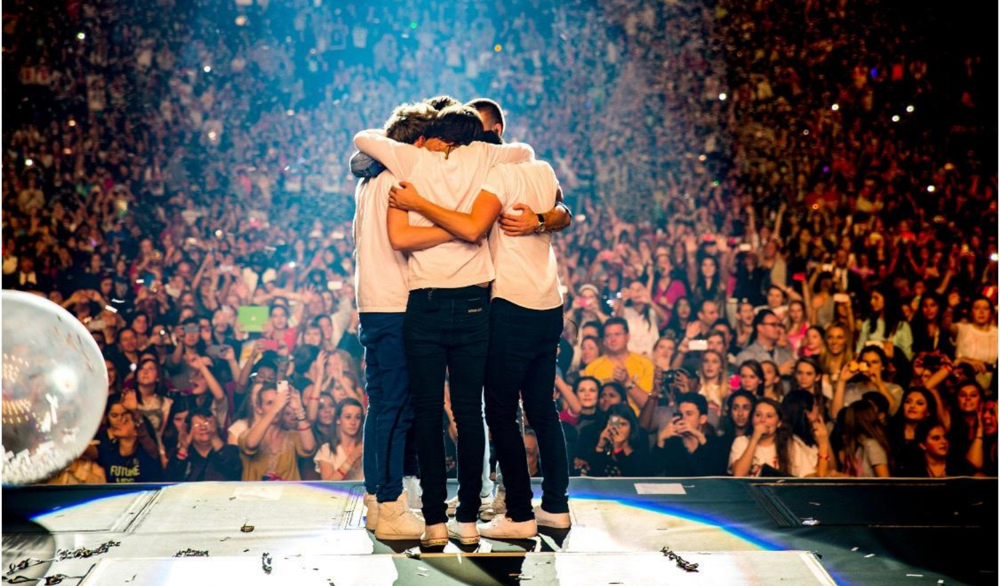

Giras Mundiales de One Direction
Las giras de One Direction fueron una parte fundamental de su éxito internacional, ya que les permitieron consolidar una enorme base de fans en distintos continentes. Entre 2011 y 2015 la banda realizó varias giras mundiales con conciertos en Europa, América, Asia y Oceanía, presentándose en estadios y arenas con miles de asistentes. Estas giras acompañaron el lanzamiento de sus álbumes y ayudaron a reforzar su presencia como uno de los grupos pop más populares de la década.
Su primera gran gira fue Up All Night Tour en 2011 y 2012. Inicialmente comenzó en el Reino Unido e Irlanda, pero debido al gran éxito del grupo se extendió a otras regiones como Norteamérica, Australia y Nueva Zelanda. Durante esta gira interpretaron canciones de su primer álbum y lograron llenar numerosos recintos, lo que demostró el rápido crecimiento de su popularidad a nivel internacional.
En 2013 realizaron la gira Take Me Home Tour, que tuvo un alcance mucho mayor y llevó a la banda a presentarse en más países y escenarios más grandes. Esta gira incluyó conciertos en Europa, América y Oceanía, y fue una de las más exitosas de ese año dentro de la música pop. Las presentaciones destacaban por la interacción con el público y por incluir tanto canciones enérgicas como baladas del segundo álbum del grupo.
Posteriormente llevaron a cabo la gira Where We Are Tour en 2014, considerada su gira más grande. A diferencia de las anteriores, la mayoría de los conciertos se realizaron en estadios, lo que permitió reunir a decenas de miles de fans en cada presentación. Esta gira recaudó cientos de millones de dólares y se convirtió en una de las más exitosas del año, consolidando el impacto global de la banda.
Finalmente, en 2015 realizaron la On the Road Again Tour, la última gira antes de que el grupo anunciara una pausa en sus actividades. Aunque tuvo menos fechas que las anteriores, continuó atrayendo a grandes multitudes y mantuvo el entusiasmo de los fans en distintas partes del mundo. Estas giras no solo promovieron su música, sino que también fortalecieron la relación entre la banda y su público, convirtiéndose en momentos clave dentro de su trayectoria artística.
Características de los conciertos
- Grandes producciones
- Interacción con el público
- Pantallas gigantes LED
- Versiones acústicas en vivo
Tabla comparativa de giras
| Gira | Año | Tipo de recinto |
|---|---|---|
| Up All Night | 2011-2012 | Arenas |
| Where We Are | 2014 | Estadios |
Imágenes


